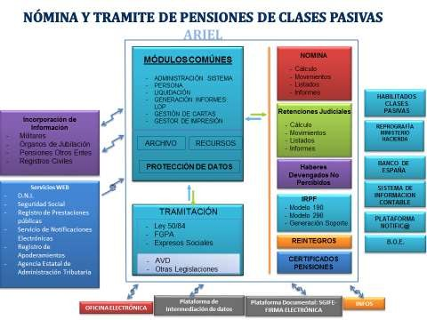
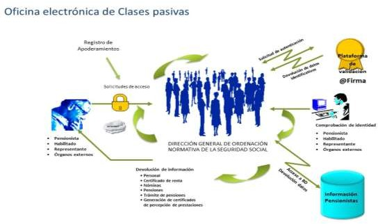
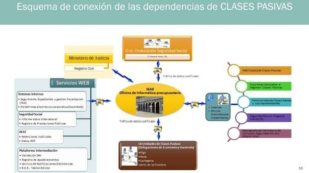

Costes de personal y pensiones públicas
Ámbito de costes de personal y pensiones públicas.¶
Los sistemas de información incluidos en este ámbito se están utilizando en las Direcciones Generales de la Secretaría de Estado de Presupuestos y Gastos, especialmente, en la Dirección General de Costes de Personal, en la Intervención General de la Administración del Estado y en las Delegaciones de Economía y Hacienda.
A las unidades anteriores, hay que añadir, a partir del Real Decreto 2/2020, de 12 de enero, por el que se reestructuran los departamentos ministeriales, la Dirección General de Ordenación de la Seguridad Social (DGOSS) del Ministerio de Inclusión, Seguridad Social y Migraciones, como órgano directivo y gestor del sistema de Clases Pasivas del Estado.
Tradicionalmente, el órgano encargado de hacer efectivo el pago de estas pensiones, fue la “Dirección General de la Deuda y Clases Pasivas”, si bien a partir del Real Decreto Legislativo 670/1987, de 30 de abril de abril, por el que se aprueba el Texto refundido de la Ley de Clases Pasivas, el órgano encargado de la gestión y pago de estas prestaciones era la Dirección General de Costes de Personal y Pensiones Públicas del Ministerio de Hacienda, a través de la Subdirección General de Gestión de Clases Pasivas.
La última reforma del Régimen de Clases Pasivas se está realizando en tres fases y, por ahora sólo afecta a la ubicación del órgano de gestión, si bien el objetivo final es su plena integración en el Instituto Nacional de la Seguridad Social (INSS):
-
El Real Decreto 2/2020, de 12 de enero, por el que se reestructuran los departamentos ministeriales. En esta disposición, la competencia de gestión del Régimen de Clases Pasivas se adscribe al Ministerio de Inclusión, Seguridad Social y Migraciones (MISSM).
-
El Real Decreto-ley 15/2020, de 21 de abril, de medidas urgentes complementarias para apoyar la economía y el empleo, que en sus disposiciones adiciones, transitorias y finales realiza una adaptación normativa de la legislación de Clases Pasivas atribuyendo las competencias de gestión de pensiones al INSS de una forma diferida y, transitoriamente a la Dirección General de Ordenación de la Seguridad Social (DGOSS). Esta adaptación normativa, a raíz del contenido de una sentencia del Tribunal Constitucional que declaraba no adecuada la forma de tramitación, figura reproducida textualmente en el texto articulado del Proyecto de Ley de Presupuestos Generales del Estado para el año 2022.
-
Desde el Real Decreto 497/2020, de 28 de abril, por el que se desarrolla la estructura orgánica básica del Ministerio de Inclusión, Seguridad Social y Migraciones, que adscribe el órgano de gestión, la Subdirección de Gestión de Clases Pasivas, al INSS de una forma diferida.
El marco competencial descrito se recoge nuevamente en la disposición transitoria segunda “Gestión del régimen de Clases Pasivas” del Real Decreto 501/2024 de 21 de enero que desarrolla la estructura orgánica básica del Ministerio de Inclusión. Seguridad Social y Migraciones:
“Hasta que se produzca la total asunción de la gestión del Régimen de Clases Pasivas del Estado por el Instituto Nacional de la Seguridad Social, corresponderá a la Dirección General de Ordenación de la Seguridad Social las funciones de reconocimiento, gestión y propuesta de los pagos de las pensiones del Régimen de Clases Pasivas del Estado, así como la resolución de los recursos interpuestos frente a los acuerdos en materia de Clases Pasivas y las funciones de información y atención al público, de conformidad con lo dispuesto en la disposición transitoria tercera de la Ley 22/2021, de 28 de diciembre, de Presupuestos Generales del Estado para el año 2022.
Para el desempeño de estas funciones, durante este periodo la Subdirección General de Gestión de Clases Pasivas continuará adscrita a la Dirección General de Ordenación de la Seguridad Social.
Con el mismo carácter transitorio y hasta que se produzca la integración de la Subdirección General de Gestión de Clases Pasivas en el Instituto Nacional de la Seguridad Social, las competencias en materia de reconocimiento, gestión y propuesta de pagos de las prestaciones, indemnizaciones, ayudas y anticipos cuya
competencia tenga atribuida la Dirección General de Ordenación de la Seguridad Social serán ejercidas por la citada Subdirección General de Gestión de Clases Pasivas.
De acuerdo con lo previsto en la disposición transitoria tercera de la Ley 22/2021, de 28 de diciembre, a los procedimientos iniciados en la Dirección General de Personal del Ministerio de Defensa antes del 6 de octubre de 2020, no les será de aplicación lo previsto en la citada disposición transitoria tercera, rigiéndose por la normativa anterior. En estos supuestos, una vez se haya producido el reconocimiento de la pensión, se remitirán al Ministerio de Inclusión, Seguridad Social y Migraciones para el correspondiente pago.
Las funciones de asistencia jurídica serán ejercidas por el Servicio Jurídico de la Administración de la Seguridad Social mientras la Dirección General de Ordenación de la Seguridad Social mantenga competencias en materia de clases pasivas y otras prestaciones de Seguridad Social”.
Resumiendo, se puede hablar de un traspaso de competencias desde el entonces Ministerio de Hacienda al INSS por fases:
-
Hasta el día 5 de octubre de 2020, la Subdirección General de Gestión de Clases Pasivas encuadrada en la Dirección General de Costes de Personal del entonces Ministerio de Hacienda.
-
A partir del día 6 de octubre la Subdirección General de Gestión de Clases Pasivas se adscribió transitoriamente a la Dirección General de Ordenación de la Seguridad Social, que forma parte de la Secretaría de Estado de la Seguridad Social y Pensiones, que pertenece al Ministerio de Inclusión, Seguridad Social y Migraciones.
-
A partir de una fecha que está por concretar, la Subdirección General de Gestión de Clases Pasivas pasará a pertenecer al INSS.
Recordar que mientras el INSS no asuma íntegramente la gestión de las pensiones de Clases Pasivas, la OIP de la IGAE tendrá que seguir manteniendo los sistemas de información que dan cobertura a la gestión de este tipo de pensiones según se indica en la Disposición Transitoria 4ª del R.D. 206/2024 de 27 de febrero por el que se desarrolla la estructura orgánica básica del Ministerio de Hacienda : ”La Oficina de Informática Presupuestaria de la Intervención General de la Administración del Estado continuará prestando los servicios y procedimientos informáticos específicos para la gestión del sistema de clases pasivas del Estado hasta que sean asumidos los procedimientos y sistemas técnicos requeridos para la prestación del servicio por la Gerencia de Informática de la Seguridad Social, de acuerdo a lo dispuesto en la disposición transitoria cuarta del Real Decreto 1009/2023, de 5 de diciembre, por el que se establece la estructura orgánica básica de los departamentos ministeriales, y en los Reales Decretos de estructura orgánica básica de los ministerios afectados por el traspaso de la gestión.”
Después de 5 años, todavía se sigue dando desde la OIP cobertura informática a todos los procesos de gestión de pensiones y cálculo de la nómina de Clases Pasivas. Esta situación peculiar y totalmente anómala hace que el mantenimiento de esta cobertura presente un importante riesgo, ya que se desconoce cualquier planificación temporal de asunción de estos servicios por parte del órgano u órganos que actualmente tienen esta competencia, y por otra parte, no se tiene acceso desde la OIP a los recursos necesarios para su mantenimiento precisamente por no ostentar la competencia necesaria. Esta situación de alto riesgo se ha comunicado repetidamente a los responsables tanto de la DGOSS, como de la GISS, para su conocimiento y actuación.
En la elaboración de las actuaciones a realizar se han tenido en cuenta las aportaciones realizadas por los usuarios de las unidades citadas anteriormente y en especial, en las actuaciones planificadas correspondientes a la Dirección General de Costes de Personal (DGCP), las actividades que figuran en el Plan Estratégico de la Dirección General de Costes de Personal.
Para realizar una descripción y análisis de los sistemas de información utilizados es conveniente dividirlos en dos grandes grupos: los que gestionan temas relacionados con el personal que percibe algún tipo de pensión o prestación de Clases Pasivas, ahora bajo la tutela jerárquica y normativa del MISSM, y los que gestionan aspectos del personal en activo al servicio de la Administración Estatal, Autonómica o Local.
Sistemas de información que afectan al ámbito del personal pasivo
Se agrupan en este apartado los sistemas de información utilizados para el ejercicio de las funciones asignadas a la Subdirección General de Gestión de Clases Pasivas de la DGOSS del MISSM.
Relación de sistemas de información más importantes¶
Los sistemas de información más importantes en funcionamiento sobre los que se van a realizar actuaciones significativas son:
- ARIEL: Sistema de información de gestión de pensiones y cálculo de la nómina de Clases Pasivas.
Este sistema está orientado a la gestión, seguimiento y tramitación de los expedientes del sistema de pensiones de Clases Pasivas del Estado, permitiendo un tratamiento integrado del procedimiento de tramitación de pensiones de Clases Pasivas en todas sus fases: recepción de solicitudes, gestión, trámite y reconocimiento de pensiones, notificaciones, intervención, liquidación, integración en nómina, pago, gestión de reintegros, gestión de retenciones judiciales, recursos y gestión del archivo de expedientes.
- JUBIL@: Sistema de información para la tramitación electrónica del formulario de solicitud de jubilación.
Este sistema es utilizado por los órganos de jubilación para la cumplimentación, firma y envío del impreso “J” de solicitud de jubilación a la Subdirección General de Gestión de Clases Pasivas de la DGOSS para su posterior incorporación automática en el sistema de gestión de pensiones ARIEL. En la actualidad tiene más de 400 órganos de jubilación distribuidos por todo el territorio nacional.

Respecto al tratamiento masivo de datos y elaboración de informes de datos relacionados con el sistema de Clases Pasivas, destacar que la Gerencia de Informática de la Seguridad Social (GISS) ha asumido en el primer semestre del año 2024 esta función. A partir de ese momento, estos SI que en este aspecto daban cobertura se tienen que dar de baja.
- OFICINA ELECTRÓNICA DE CLASES PASIVAS: Conjunto de sistemas de información que, a través de Internet, sirven para canalizar las relaciones entre los sistemas de gestión de pensiones y prestaciones de Clases Pasivas y las personas con las que mantengan algún tipo de relación: pensionistas, representantes y habilitados de Clases Pasivas.
Bajo este epígrafe se incluye un conjunto de sistemas y de utilidades que tienen la característica común de proporcionar algún servicio o información a través de Internet.

El acceso a este conjunto de SI, se realiza mediante un enlace directo que figura en la Sede Electrónica de la Seguridad Social.
Al tratarse de servicios prestados al ciudadano a través de Internet se detalla a continuación una relación de los servicios que se ofrecen, clasificados en función del destinatario final y en su caso, la necesidad de utilizar certificado electrónico para acceder a la información:
| Servicios en funcionamiento de la oficina electrónica | |
|---|---|
| CON certificado electrónico | SIN certificado electrónico |
| Pensionistas/Representantes Legales/ Habilitados de Clases Pasivas - Consulta de datos personalizados: - Datos particulares. - Datos económicos. - Datos pensiones. - Listados e informes. - Informes: - Recibo de nómina del mes actual y meses anteriores. - Revalorización. - Certificados de retenciones e impuestos. - Certificados de pensiones generados con un código de validación y firmados electrónicamente: - Mensual de pensiones en alta. - Anual de pensiones en alta. - Pensiones en baja. - Pensionista de Clases Pasivas. - Pensionista de jubilación por incapacidad/retiro por inutilidad. - Certificado negativo de percepción de pensiones. - Consulta del estado de tramitación de una solicitud de prestaciones de Clases Pasivas, y de un recurso. - Notificaciones electrónicas. |
- Información en diversos idiomas sobre los trámites o procedimientos de obtención de prestaciones de Clases pasivas (Página WEB de Clases pasivas, Sede electrónica de Clases Pasivas). - Cálculo simulado de pensiones de Clases pasivas. - Descarga de formularios de Clases Pasivas en formato PDF. - Acceso a la Sede electrónica. |
Se proporciona información directamente a los pensionistas y a sus representantes o habilitados utilizando, si fuera necesario, como medio de identificación el certificado electrónico. Por su importancia es necesario destacar los siguientes sistemas de información:
-
Ofelia-Consult@: consulta de información general y personalizada de datos de la nómina de pensiones de Clases Pasivas, acceso a la nómina del mes actual y de meses anteriores, información histórica, generación y obtención de certificados de percepción de pensiones o de retenciones del impuesto sobre la renta de las personas físicas.
-
Simul@: permite efectuar un cálculo aproximado del importe teórico de una pensión de jubilación de Clases Pasivas, a partir de los datos introducidos por el usuario.

-
Consult@: proporciona información sobre el estado de tramitación real de una solicitud de prestación de Clases Pasivas o de la tramitación de un recurso.
-
LisNom: acceso a los listados de la nómina de Clases Pasivas del Estado bien por las Unidades de Clases Pasivas o por los Habilitados de Clases Pasivas.
-
Registro Electrónico: permite a cualquier usuario iniciar la tramitación de los procedimientos de solicitud de prestaciones de Clases Pasivas a través de Internet.
-
GESFICH: Permite el envío/recepción, mediante un canal seguro, de ficheros de gran capacidad a través de Internet evitando la generación de soportes magnéticos y su posterior envío físico a los receptores finales de la información.
-
GENOVA: Gestión de notificaciones por vía automática. Permite el envío/recepción de documentos que tienen que ser notificados a través de la plataforma Notific@.
-
NOVAWEB: Consulta de envíos a la plataforma de notificación Notific@.
-
ECALCP: Gestión de las encuestas de calidad de los servicios prestados por clases pasivas
En este apartado, los sistemas más importantes en funcionamiento son los relacionados con la tramitación, gestión, cálculo de la nómina y pago de las pensiones de Clases Pasivas del Estado: ARIEL y JUBIL@.
Análisis de la situación¶
Desde el 6 de octubre del año 2020, y hasta su traspaso definitivo al INSS, la gestión y tramitación del conjunto de pensiones de Clases Pasivas se dirige, impulsa y coordina por la DGOSS. Con el fin de atender al pensionista lo más cerca posible a su lugar de residencia, cuenta con una estructura descentralizada de gestión de 58 Unidades de Clases Pasivas (UCPs) distribuidas por todo el territorio nacional, e integradas en la estructura orgánica de las Delegaciones de Economía y Hacienda. Estas UCPs, siguen dependiendo del Ministerio de Hacienda.
La DGOSS a través de la SGGCP actúa transitoriamente como órgano que tiene encargadas las competencias de recepción, trámite y resolución de todas las solicitudes de pensión de Clases Pasivas, incluyendo las causadas por el personal militar. Al mismo tiempo, actúa como Unidad de Clases Pasivas de la provincia de Madrid.
De forma transitoria, y por quinto año consecutivo y hasta su traspaso definitivo al INSS, la OIP de la IGAE sigue proporcionando el servicio informático necesario para garantizar su funcionamiento, que incluye tanto el mantenimiento, como el posible desarrollo de nuevas funcionalidades.
En la actualidad, la actividad realizada por los órganos anteriores, en función de sus competencias, se apoya en 2 sistemas de información corporativos que dan servicio a sus necesidades:
-
ARIEL: Gestión y tramitación de pensiones y cálculo de la nómina de Clases Pasivas
-
JUBIL@: Captura, gestión, tramitación y presentación del impreso “J” de jubilación.
La totalidad de las solicitudes de jubilación llegan a la DGOSS a través del sistema de información JUBIL@. Los órganos de jubilación envían las solicitudes firmadas electrónicamente y su incorporación a ARIEL se realiza en el mismo día en que se reciben. Ambos sistemas son considerados críticos en cuanto a garantizar su funcionamiento.
Del sistema de información ARIEL caben destacar las siguientes características:
-
Se trata de un sistema de información integrado, con una única base de datos que relaciona de forma directa la tramitación del procedimiento y su integración en la nómina. Se simplifican y desaparecen las tareas de trasvase de información necesarias en los anteriores sistemas.
-
El usuario dispone de herramientas que facilitan la administración y personalización del sistema de información.
-
Se incorporan nuevas funcionalidades: Subsistema de reintegros, módulo de liquidación, nómina de incidencias, pagos en el exterior, pagos masivos, módulo de retenciones judiciales.
-
La tramitación automatizada se extiende, o se puede extender, a todos los procedimientos de gestión de Clases Pasivas.
-
Se facilita y simplifica la relación, en cuanto al envío o recepción de información, con otros órganos externos bien de forma directa o a través de servicios Web (Seguridad Social, base de datos de pensiones públicas, Agencia Estatal de Administración Tributaria, Intervención delegada, Ministerio de Justicia, Instituto Nacional de Estadística y Delegaciones de Economía y Hacienda).
-
Generación de toda la documentación en formato PDF, con posibilidad de elegir si tienen que ser firmados electrónicamente con firma de cliente o de servidor. Todos los documentos electrónicos generados están adaptados al Esquema Nacional de Interoperabilidad.
-
Creación de un módulo de gestión del IRPF para la generación y consulta de la información necesaria para la elaboración de los modelos 190 y 296 de retenciones del IRPF a presentar tanto a la Agencia Estatal de Administración Tributaria, como a las tres Haciendas Forales (Álava, Vizcaya, Guipúzcoa).
-
Facilita la integración y comunicación con otros sistemas de información internos: JUBIL@, Registro electrónico, SGIFE, RAYOnet y con bases de datos externas (Ministerio de Justicia, Instituto Nacional de Estadística).
-
Simplifica los procedimientos necesarios para el cálculo de la nómina garantizando la exactitud de su cálculo. Se incrementa la información disponible para el gestor y facilita el archivo y consulta de la documentación generada en cada nómina.
-
La digitalización del archivo de expedientes de Clases Pasivas y la conversión en documentos electrónicos de los documentos en papel que tienen su entrada por el Registro de entrada de la DGOSS a través de RAYONET.
-
La conexión con la plataforma Notific@, para el envío de todos los documentos que tienen que ser objeto de comunicación a los pensionistas, incluyendo los que necesitan ser objeto de notificación.
-
La integración de la función fiscalizadora en el procedimiento electrónico mediante la conexión de ARIEL con el sistema de información de fiscalización IRIS.
-
Conexión con el denominado Tablón Edictal del Boletín Oficial del Estado para el tratamiento y gestión de las notificaciones que no se han podido realizar.
-
Conexión a través de servicios WEB con la Agencia Estatal de Administración Tributaria, para acceder de forma electrónica a información sobre embargos y retenciones ordenadas practicar por la Agencia, así como a determinada información relacionada con el Impuesto de Renta de las Personas Físicas.
En relación con el Expediente Electrónico se consiguió que toda la documentación generada por ARIEL en la tramitación de los distintos tipos de expedientes esté en formato electrónico adaptado al Esquema Nacional de Interoperabilidad. La digitalización de toda la documentación en papel que se recibe, así como la utilización masiva de servicios web para obtener la información necesaria para la tramitación de los expedientes ha generado una reducción de los plazos de tramitación, un ahorro económico evidente y, lo más importante, consiguió evitar al solicitante la aportación de documentación de la que ya dispone la Administración.
La incorporación de la firma electrónica a los documentos generados supuso una modificación total en la cadena de generación de los documentos, así como en la forma de gestionar los expedientes al desaparecer en la tramitación el papel y crearse el expediente electrónico como suma de documentos electrónicos asociados a una carpeta o procedimiento.
Derivado de la modificación anterior, se ha simplificado también el proceso de impresión y envío de estos documentos por correo ordinario, estando preparado el sistema para poder diferenciar 2 tipos de escritos: los que llevan acuse de recibo (notificaciones) y el resto. Ambos, se redirigen para su impresión al Centro de Impresión y Ensobrado (CIE) de la Agencia Estatal de Administración Tributaria (AEAT) a través de la plataforma NOTIFIC@ que se traduce en un flujo diario de información entre las 3 plataformas.
Respecto a la gestión de retenciones y pagos a cuenta del impuesto de la renta de las personas físicas y del impuesto sobre la renta de no residentes, surgió la necesidad de diferenciar la información sobre retenciones practicadas calculando la parte que corresponde a cada una de las 4 Haciendas Forales (Álava, Guipúzcoa, Vizcaya y Navarra), acumulándola y procediendo a su envío en el plazo regulado. De esta forma, a efectos tributarios, el sistema de información ARIEL se relaciona con 5 agencias tributarias diferentes.
La adscripción del Régimen de Clases Pasivas al MISSM a principios del año 2020 y su futura incorporación al INSS, condiciona las actuaciones a fijar a corto, medio y largo plazo, y en especial todo lo que afecte a plantear mejoras, reformas o modificaciones que afecten al sistema de información o su adaptación a nuevos productos. Se tendrán que priorizar las tareas propias del mantenimiento, así como las derivadas de este futurible traslado. Por lo tanto, y a falta de información sobre el futuro, pocos son los proyectos y actuaciones en las que se puede avanzar, salvo las mínimas necesarias.
Hay que destacar algunas actuaciones realizadas a lo largo del año 2024:
-
Adaptación a la modificación del cálculo del incentivo por prórroga de la edad de jubilación regulado en el artículo 8 de la Ley 21/2021 de 28 de diciembre de garantía del poder adquisitivo de las pensiones y de otras medidas de refuerzo de la sostenibilidad financiera y social del sistema público de pensiones: Cálculo de la opción mixta, cálculo del incentivo a tanto alzado cuando se tiene otra pensión.
-
Revalorización de las pensiones y complementos de activos.
-
Procesos especiales:
-
Recálculo masivo del IRPF a los habitantes de la isla de La Palma.
-
Medidas frente a los daños causados por las inundaciones en las Comunidades Autónomas de Castilla-La Mancha y Valencia.
-
Implantación del subsistema de gestión de fianzas de los Habilitados de Clases Pasivas.
-
Adaptación del subsistema de Recursos, para utilizar el sistema de párrafos preestablecidos en la generación de informes y cartas.
-
Migración de la base de datos a EXADATA.
-
Revisión automática de los complementos de Maternidad de varones.
-
Adaptación a la nueva normativa de pagos en el exterior.
-
Modificación del cálculo de:
-
Tratamiento del excedente de Pensión Compensatoria
-
Expedientes de terrorismo para la clave de pensión 20
-
Complemento de maternidad en pensiones de viudedad
-
Incentivo a tanto alzado en Expediente de Reglamentos Comunitarios.

Por otra parte, es previsible que algunas prestaciones que gestionaba la SG de Gestión de Clases Pasivas pasen a ser gestionadas por otras unidades administrativas ajenas al MISSM (Gestión del Fondo de garantía de pago de alimentos, indemnizaciones por terrorismo). De producirse esta circunstancia, se tendría que valorar su incidencia en los sistemas de información y la carga de trabajo necesaria para su adaptación a la nueva distribución de competencias.
Para el funcionamiento del sistema de información ARIEL, su mantenimiento y adaptación continua a los estándares de la OIP, así como el desarrollo de las actuaciones destinadas a corregir aspectos no contemplados inicialmente o mejoras en la gestión detectadas que han supuesto un incremento de la funcionalidad, ha sido necesario seguir aplicando un importante número de recursos humanos. Hasta finales de diciembre de 2024, se han recibido 226 notas de trabajo para adaptar y mejorar las prestaciones del sistema de información, así como otras notas de incidencias para corregir algún tipo de error puntual.
Jubil@Tramitación Electrónica de Impresos “J”Departamentos MinisterialesAyuntamientosUniversidadesCCAAACCESO SISTEMAVALIDACIÓN CERTIFICADOS@FIRMA FNMTMANUAL MASIVAVALIDACIÓNARIELy Cálculo de NóminaSistemas de GestiónÓrganos de JubilaciónÓrganos de JubilaciónÓrganos de JubilaciónÓrganos de JubilaciónCAPTURA DATOSPAGOFIRMA/ENVÍOJubil@Tramitación Electrónica de Impresos “J”Departamentos MinisterialesAyuntamientosUniversidadesCCAAACCESO SISTEMAVALIDACIÓN CERTIFICADOS@FIRMA FNMTMANUAL MASIVAVALIDACIÓNARIELy Cálculo de NóminaSistemas de GestiónÓrganos de JubilaciónÓrganos de JubilaciónÓrganos de JubilaciónÓrganos de JubilaciónCAPTURA DATOSPAGOFIRMA/ENVÍOJubil@


La explotación de los datos derivados de la gestión de las pensiones y prestaciones del Régimen de Clases Pasivas del Estado se ha estado realizando mediante sistemas de tratamiento masivo de datos utilizando la herramienta de Business Objects. Esta herramienta planteaba, además de un elevado coste, el problema de que la parametrización de la información a través de cuadros de mandos es complicada. La GISS, a través de su Oficina del Dato ha asumido la gestión de los sistemas de información de tratamiento masivo de datos.
El sistema de información JUBIL@, en funcionamiento desde el año 2010, es un sistema crítico para la gestión del Régimen de Clases Pasivas. Permite que las solicitudes de jubilación (impresos “J”) junto con los documentos electrónicos necesarios, se reciban en la DGOSS de forma electrónica. La tecnología utilizada en su desarrollo ha quedado obsoleta y, es necesario abordar los trabajos necesarios para su reprogramación integral, si bien esta tarea deberá ser asumida en función de la asunción de competencias por la GISS.
A lo largo del año 2024 hay que destacar la realización de las siguientes actividades fundamentalmente de mantenimiento del aplicativo:
-
Modificaciones para poder anexar documentos PAdES sin perder información de la firma electrónica del documento original.
-
Adaptación al nuevo entorno Solaris y EXADATA.
-
Incorporación de nuevas validaciones en JUBIL@
-
Modificaciones y altas en la solicitud del tipo de incentivo
-
Edad de jubilación forzosa en solicitudes de expedientes de Defensa, incapacidad en la Legislación 19 y edad de jubilación forzosa para órganos de jubilación de Defensa Militares.
El fomento de la Administración electrónica, y en especial el aumento del intercambio de información a través de medios electrónicos, ha hecho necesario que se hayan puesto en funcionamiento diferentes servicios WEB: Registro de prestaciones sociales públicas, INTECO, consulta del censo al servicio de notificaciones electrónicas, servicios web del Registro Electrónico de Apoderamientos y otros relacionados con la conexión a la plataforma Notific@, el envío de información a la carpeta ciudadana, conexión al BOE y obtención de información sobre embargos y retenciones ordenadas por la AEAT. Durante el año 2024 ha sido necesario realizar actividades de actualización y mantenimiento de estos servicios web.
Teniendo en cuenta que la utilización de la plataforma Notific@ se está extendiendo, se diseñó el aplicativo GENOVA (Gestión de notificaciones por vía automática) para que pudiera utilizarse por otras unidades administrativas como servicio horizontal de manera que cualquier unidad de la Secretaría de Estado de Presupuestos y Gastos y de la IGAE pueda canalizar a través de este sistema el envío de notificaciones a la plataforma Notific@. Este sistema de información está adaptado a las nuevas especificaciones facilitadas desde la plataforma Notific@ (Notifica2). Estas nuevas especificaciones, suponen entre otras novedades, un mayor control de las situaciones en las que está una notificación. Teniendo en cuenta esto, se ha tenido que adaptar el sistema de información GENOVA para permitir la convivencia de las dos versiones de Notific@.
Para la adecuada gestión de los envíos de notificaciones realizados, se desarrolló otro sistema (NOVAWEB) para que las unidades administrativas que utilicen GENOVA puedan realizar una gestión adecuada de sus envíos que agrupe el envío manual, la consulta y la recepción de información.
Respecto a estos sistemas de información, durante el año 2024 se han realizado fundamentalmente actuaciones de mantenimiento y mejora de la calidad de los aplicativos sugeridas por el área de Calidad, así como trabajos de adaptación a entornos de software libre, migración a la plataforma Solaris y exadata.
En el año 2020 se puso en funcionamiento el sistema de información ECALCP para la gestión y tratamiento de las encuestas de calidad de los servicios prestados por Clases Pasivas del Estado. La finalidad de este sistema era sustituir la encuesta en papel que se enviaba a cada pensionista por la cumplimentación de un formulario web único, enviado como un enlace a la dirección de correo electrónico facilitada por el pensionista. Gracias a este sistema se ha evitado la generación y envío de encuestas en papel, así como el tratamiento posterior de los datos recibidos. Para el gestor, el sistema facilita la extracción de datos de pensionistas del sistema de información ARIEL a los que se va a enviar la encuesta, el diseño del formulario a enviar, la redacción del contenido del correo electrónico a mandar de forma personalizada, así como el envío de recordatorios de cumplimentación de la encuesta. Al encuestado se le permite el acceso a la encuesta, su cumplimentación, impresión, guardar borradores y su envío. Respecto a este sistema de información no se han realizado actividades especiales más allá de las derivadas de su mantenimiento.
A lo largo del año 2024, se han enviado 32.376 encuestas habiéndose obtenido un nivel de respuesta del 35%, en total 11.431 respuestas lo que ha permitido un tratamiento adecuado de la información.
La implantación del sistema anterior supuso un ahorro tanto en costes directos asociados a labores de impresión, ensobrado y envío de la encuesta, como en indirectos, derivados del tratamiento de los datos. A lo largo del año 2025, se debería avanzar en la gestión directa de los datos obtenidos ya que, actualmente, la explotación de los resultados se hace mediante su tratamiento en bases de datos externas en formato ACCESS, y en la generación de utilidades que faciliten la creación de encuestas directamente por el usuario, si bien, estos proyectos están pendientes de evaluación debido a que todavía está pendiente de planificar las actuaciones necesarias para la integración del régimen de Clases Pasivas en el INSS.
Objetivos y prioridades¶
Alcanzado el objetivo de integrar en ARIEL la totalidad de la gestión de pensiones de Clases Pasivas, se plantean para los años siguientes los objetivos de:
-
Mantenimiento correctivo y funcional del sistema de información ARIEL, incluyendo las actividades necesarias para integrar plenamente la gestión de pensiones causadas por el personal militar y todas las actividades que se puedan derivar del traspaso de los sistemas de información a la GISS, o del traspaso de gestión de algunas prestaciones a otras unidades administrativas distintas del INSS.
-
Continuar la adaptación al nuevo protocolo de la Tarjeta Social Universal del pensionista (Sustitución del Registro de Prestaciones Públicas).
-
Implementar las mejoras de accesibilidad identificadas por el área de Calidad en los sistemas de información que se utilicen a través de internet.

Sistemas de información que afectan al ámbito del personal en activo: Sistemas de información para la decisión sobre retribuciones de puestos de trabajo del Sector Público y la gestión de las relaciones de puestos de trabajo.
Relación de sistemas de información más importantes¶
Actualmente, se agrupan bajo este epígrafe los sistemas de información que son utilizados para el desarrollo de las funciones asignadas a las Subdirecciones Generales de Estudios y Análisis, Gestión de Costes y la Unidad de Colectivos de Régimen Especial de la DGCP. Se trata de sistemas de información destinados al control, la gestión, así como a proporcionar información para la decisión sobre retribuciones de los puestos de trabajo al servicio del Sector Público Estatal.
-
RPT-LABORALES: Sistema de información para la gestión de los puestos de trabajo del personal laboral de la Administración General del Estado.
-
INFO RPT-Laborales: Sistema de información de generación de informes y consultas no planificadas.
Proporciona al usuario una oferta de información estratégica o masiva alrededor de una base de datos. Está orientado a proporcionar informes sobre consultas masivas no planificadas con respuesta inmediata a la información demandada mediante la confección de informes o documentos que pueden ser posteriormente modificados o exportados a otros entornos ofimáticos.
-
PAPIRO: Sistema de información para la gestión y control de expedientes tramitados en la DGCP.
-
SIMAT/SIMATweb: Sistema de información de masas salariales y efectivos de Administraciones Territoriales.
Este sistema obtiene y clasifica información del número de efectivos y los costes de personal de los entes que integran el sector público de las Comunidades Autónomas y Entidades Locales.
- FFCC: Sistema de información para la gestión del catálogo de puestos de trabajo del personal de las Fuerzas y Cuerpos de Seguridad del Estado.
El sistema ayuda a gestionar los catálogos de puestos de trabajo de Fuerzas y Cuerpos de Seguridad del Estado de la Dirección General de la Policía, Dirección General de la Guardia Civil y de la Secretaría de Estado de Seguridad.
Análisis de situación¶
Durante el año 2024, se ha consolidado el funcionamiento de los sistemas de información de gestión RPT-Laborales, SIMAT, FFCC y PAPIRO mediante la realización de las tareas de mantenimiento y mejora de los aplicativos que han sido solicitadas por el usuario.
En relación con el sistema FFCC, una modificación de las competencias atribuidas a la DGCP ha generado que este sistema de información ya no sea necesario para la gestión que realiza. No obstante, a solicitud de la Dirección General de la Policía del Ministerio del Interior, va a seguir activo durante un tiempo siendo utilizado exclusivamente por la citada unidad hasta que desarrollen un aplicativo que haga las mismas funciones. Para facilitar esta transición, se ha traspasado a la unidad informática que les da servicio la totalidad del código fuente.
Las actuaciones más relevantes realizadas en RPT-Laborales, están relacionadas fundamentalmente con su mantenimiento, destacando las derivadas del cambio de ejercicio o las de creación de masas salariales para este grupo de trabajadores.
Para el año 2025 se prevén, respecto a este sistema (RPT-Laborales) nuevamente actuaciones de mantenimiento, dando soporte a los usuarios en la realización de tareas habituales que lleven consigo actuaciones masivas en la base de datos.
El sistema de información PAPIRO se implantó en junio del año 2018, y durante el año 2024 se han realizado trabajos de mantenimiento y desarrollo de nuevas funcionalidades entre las que cabe destacar:
-
Cambio Retributivo teniendo en cuenta las modificaciones derivadas de la LPGE 2024 y actualización de las masas salariales del 0,5% según la Ley Presupuestaria para los requerimientos del ejercicio 2023 de convenio único.
-
Se ha avanzado en el desarrollo para la gestión de la información de personal directivo y de los altos cargos, creándose el modelo de datos, así como pantallas y posibilidades de carga para el mantenimiento de este tipo de personal.
En el año 2019, la DGCP manifestó su interés por el desarrollo de un nuevo sistema de información que, a partir de la funcionalidad de PAPIRO, fuera capaz de cubrir toda la gestión de los procedimientos y expedientes que tramitan de cada Unidad de la DGCP y, en especial: las autorizaciones de contratos, las autorizaciones de las “masas salariales” y la gestión de los expedientes de la Comisión de Seguimiento de la Negociación Colectiva de las Empresas Públicas.
Durante el año 2020 se realizó el estudio preliminar del denominado Sistema Integrado de Gestión de Retribuciones de Entidades del Sector Público Estatal (SIGRES) con el fin de integrar la totalidad de la gestión de la Subdirección General de Gestión de Costes y que ahora se realizan a través de PAPIRO. Para abordar este proyecto se estimó conveniente avanzar por fases, empezando por el tratamiento de un procedimiento, la Comisión de Seguimiento de la Negociación Colectiva de las Empresas Públicas, que sería el primer procedimiento para incluir en la nueva aplicación.
Se planificó el desarrollo del sistema de información SIGRES, teniendo en cuenta el conjunto de expedientes que se iban a tramitar. Inicialmente, se empezó a desarrollar el procedimiento de “Comisión de Seguimiento de la Negociación Colectiva de las Empresas Públicas” como una primera fase que permitiera, además de desarrollar las particularidades de este procedimiento, las generales que iban a afectar al resto (administración, auditoria, listados, perfiles, etc.). La Ley de Presupuestos Generales del Estado para el año 2023, reguló que la gestión de este tipo de expedientes ya no era competencia de la DGCP y por lo tanto se tuvo que realizar una reestructuración de las prioridades de desarrollo poniéndose el foco en el procedimiento de gestión de las “masas salariales”.
En el año 2024, se han conseguido grandes avances respecto al procedimiento de “masas salariales” dentro de SIGRES, ya que se han gestionado las solicitudes de masa salarial de las entidades piloto dentro de la aplicación. La creación de este módulo garantiza la integridad de los datos al incorporar verificaciones dentro de los formularios enviado en formato digital. Esta mejora elimina la necesidad de intercambiar información a través de correos electrónicos y archivos Excel. El proyecto continúa en desarrollo, con la implementación de diferentes módulos, entre los cuales destacan el módulo de instructor, el módulo de informes y estadísticas, y el módulo de carga de procesos masivos. Además, se están preparando los datos y el sistema para las más de 100 nuevas entidades que participarán en proceso de masas salariales de 2025.
Por otra parte, para la mejora de los procesos de gestión de los volantes e informes que se elaboran y resuelven en la Subdirección General de Ordenación Normativa y Recursos (SGONR), es necesaria la puesta en marcha de una solución informática que permita su seguimiento y control de todos los informes y volantes que tramitan. Para ello, en el año 2023, se realizó una labor de valoración de las necesidades que se tradujo en la propuesta al órgano gestor para el desarrollo de un nuevo sistema de información. Durante el segundo semestre de 2024 se han iniciado los trabajos para su desarrollo bajo el nombre de GESTION@ (Gestión de informes).
La nueva aplicación Gestion@ tiene como finalidad optimizar los procesos de gestión de informes en la Subdirección General de Ordenación Normativa y Recursos dentro de la DGCP. Para alcanzar este objetivo, se han utilizado nuevas tecnologías como un motor de BPMN que facilita la gestión de las etapas del proceso de gestión de informes. Actualmente, el proyecto se encuentra en fase de desarrollo, habiéndose completado ya la gestión de notificaciones, la integración con Clarin2, así como la creación de diversas interfaces gráficas. Como objetivo para el año 2025, está el de seguir con este desarrollo hasta que el órgano gestor considere que se puede poner en funcionamiento.
Como añadido, a lo anterior, otras unidades de la SEPG también han manifestado la necesidad de tener alguna herramienta de seguimiento de informes, con lo cual es de suponer que este aplicativo se pueda ir implantado en otros centros y para otros procedimientos.
Asociada a la aplicación anterior se diseñará e implantará, también a propuesta de la DGCP, un aplicativo que permita el análisis y control de las estructuras de la Administración General del Estado.
Asimismo, teniendo en cuenta las competencias desarrolladas por la SGONR en materia de asistencias por concurrencias a órganos colegiados de la Administración, por participación en tribunales de oposiciones y concursos encargados de la selección de personal al servicio de las Administraciones públicas, reguladas todas ellas en el Real Decreto 462/2002, de 24 de mayo, es necesaria una solución informática que permita el control de estas indemnizaciones por razón del servicio. En la medida de las posibilidades, se intentará a lo largo del año 2025 concretar el objetivo concreto de este nuevo aplicativo.
Respecto al sistema de información de masas salariales y efectivos de las administraciones territoriales (SIMAT), durante el año 2024, se han realizado labores de mantenimiento y adaptación del código a las indicaciones derivadas de las pruebas de calidad realizadas. Por otra parte, y dado que el sistema de información SIMAT fue desarrollado hace tiempo utilizando la tecnología y estándares que en su momento se utilizaban en la OIP de la IGAE durante el año 2024 se ha estado finalizando una nueva versión de este aplicativo utilizando sistemas y tecnologías de desarrollo rápido (Jmix) para aplicaciones empresariales que combina la velocidad en el desarrollo con un control total de las aplicaciones.
Así, en el cuarto trimestre de 2024, se ha puesto en producción la nueva aplicación SIMATWeb, una solución informática más moderna e intuitiva que ofrece una experiencia de usuario mejorada a los usuarios de la DGCP. Este avance es el resultado de la migración de todas las funcionalidades de la aplicación anterior, incorporando, además, innovadoras herramientas para la validación automática de datos, la generación de hojas de cálculo y el desarrollo de informes ejecutivos automáticos en Word, diseñados especialmente para optimizar los procesos de las entidades locales y comunidades autónomas. Por otra parte, se ha dado de baja el sistema de información antiguo SIMAT.
En los anteriores Planes directores, figuraba una actuación relacionada con el “control y seguimiento de las retribuciones especiales y la productividad” que no se había podido iniciar por falta de medios humanos. En relación con la misma, se mantuvo una primera reunión en el año 2022 para determinar y cuantificar el conjunto de trabajos a realizar, considerando en ese momento, que era un procedimiento que se podría incluir dentro del ámbito funcional del sistema de Información SIGRES o que se podía desarrollar un sistema de información nuevo. Durante el año 2024, se han iniciado los trabajos de estudio y desarrollo, a partir de las especificaciones dadas por el órgano gestor, y se ha visto que era más adecuado iniciar un nuevo sistema de información de gestión de retribuciones en el exterior (SIREX).
A lo largo de 2025 se prevé continuar con el desarrollo del sistema de información para el cálculo y mantenimiento de los módulos conforme a los cuales se retribuye a los funcionarios destinados en el extranjero, necesario para que la Unidad de Estudios de Retribuciones (UER) pueda calcular anualmente los módulos de equiparación del poder adquisitivo (MPA) y los módulos de calidad de vida (MCV), previstos en el Real Decreto 6/1995,de 13 de enero, por el que se regula el régimen de retribuciones de los funcionarios destinados en el extranjero, y que permitirá además:
-
La actualización de los valores de los módulos, mediante Resolución del director general de Costes de Personal, si el tipo de cambio de la divisa de referencia supera unos determinados umbrales.
-
La estimación del coste que supone la variación interanual de los módulos, partiendo de la información remitida en octubre de cada año por todos los ministerios de sus efectivos expatriados.
-
Establecer gráficas de la evolución de los tipos de cambio.
-
Determinar los gastos de representación de los Embajadores y jefes de Misión”
Por otra parte, una de las funciones de la UER consiste en la elaboración de los informes y órdenes ministeriales mediante los que se autorizan los importes de incentivos al rendimiento del personal funcionario y altos cargos. Para el desarrollo de esta competencia, que hasta ahora se viene realizando mediante complejas hojas Excel, se requiere el diseño de un sistema de información para controlar los incentivos al rendimiento del personal funcionario y eventual y altos cargos (nombre provisional INCENTIV@), que, si bien ya se ha contemplado en planes anteriores, no se ha podido iniciar por falta de personal.
Objetivos y prioridades¶
La relación de tareas a realizar es fruto de las necesidades puestas de manifiesto por el usuario hasta ahora o, en su caso, derivadas de adaptaciones normativas o actividades de mantenimiento de obligada realización de las que se tiene conocimiento.
Teniendo en cuenta la situación planteada los objetivos más importantes planificados para el año que viene y siguientes son:
-
Mantenimiento de los sistemas de información en funcionamiento.
-
Puesta en funcionamiento del sistema de información SIGRES, en concreto el Módulo gestión y control de
“Masas salariales”, según la planificación aportada por la DGCP.
-
Continuar con el desarrollo y si fuera posible Implantación del sistema de información GESTION@ para el seguimiento y control de las solicitudes de informes y volantes que se gestionan en la SGONR y, si fuera posible su extensión a toda la DGCP.
-
Estudio de un sistema de información sobre las estructuras de la Administración General del Estado, según las especificaciones que aporte la DGCP.
-
Estudio de un sistema de información para el control de las asistencias reconocidas a órganos colegiados de la Administración y por participación en tribunales de oposiciones y concursos encargados de la selección de personal al servicio de las Administraciones públicas.
-
Desarrollo del sistema de información SIREX, para el para el cálculo y mantenimiento de los módulos conforme a los cuales se retribuye a los funcionarios destinados en el extranjero.
-
Estudio y desarrollo del control y seguimiento de las retribuciones especiales y la productividad.
Sistemas de información que afectan al ámbito del personal en activo: sistemas de gestión interna de un centro directivo
Relación de sistemas de información más importantes¶
Se agrupan en este apartado los sistemas de información de carácter departamental que son utilizados en la Secretaría de Estado de Presupuestos y Gastos, en la Intervención General de la Administración del Estado, en las Delegaciones de Economía y Hacienda y en otros centros del Ministerio de Hacienda y Función Pública. Los más importantes son:
-
ERYCAWEB: Sistema de información de tramitación automática de solicitudes y consulta de datos por parte del personal de un centro directivo.
-
INFOERYCA: Sistema de tratamiento masivo y consulta de datos del personal de un centro directivo.
-
SOS: Sistema de control de incidencias.
-
SENA: Sistema de información de comunicación de averías al servicio de mantenimiento de la DGCP.
-
CONTROL HORARIO: Sistema de gestión y control horario del personal de un Centro Directivo.
-
FICH@JES: Sistema de información que posibilita la captura de los fichajes de entrada y salida del personal a través del ordenador mediante firma electrónica.
Sistemas de personal en activo
ERYCAAdministraciónGestiónDestinoFichero personalLicencias y PermisosHistórico destinosRPT-Funcionarios • ProductividadRPT-LaboralesGestión expedientes digitalizadosFICH@JESFichajes E/S diarios a través de InternetCONSULTA HORARIOFichajes E/S diariosAcumulado semanal, mensual y anualCalendario IncidenciasERYCA-WEBConsulta datos personalesConsulta licencias y permisosConsulta fichaje diario y acumuladosConsulta de expedientes digitalizadosGeneración de formularios y solicitudesERYCAWEBAsuntos ParticularesVacacionesDietasSISTEMA DE TRAMITACIÓN Y CONSULTACONTROL HORARIOMantenimiento relojesControl fichajes personalesExplotación de la informaciónControl de incidenciasERYCAAdministraciónGestiónDestinoFichero personalLicencias y PermisosHistórico destinosRPT-Funcionarios • ProductividadRPT-LaboralesGestión expedientes digitalizadosFICH@JESFichajes E/S diarios a través de InternetCONSULTA HORARIOFichajes E/S diariosAcumulado semanal, mensual y anualCalendario IncidenciasERYCA-WEBConsulta datos personalesConsulta licencias y permisosConsulta fichaje diario y acumuladosConsulta de expedientes digitalizadosGeneración de formularios y solicitudesERYCAWEBAsuntos ParticularesVacacionesDietasSISTEMA DE TRAMITACIÓN Y CONSULTACONTROL HORARIOMantenimiento relojesControl fichajes personalesExplotación de la informaciónControl de incidenciasGESTIÓN DEL PERSONAL


-
INTRANETINTRANETCONSULTA-HORARIO: Sistema de información de consulta, a través de la intranet corporativa, del horario realizado por el personal.
-
CAFE: Sistema de información de control de presencia y acceso a un edificio.
-
PLANXTRAWEB: Sistema de información que permite hacer un seguimiento (trimestral, semestral o anual) del conjunto de actividades realizadas por un Centro, en función de los objetivos y actividades previamente planificados.
-
RADIX: Sistema de Gestión de Autorizaciones que permite conceder permisos de acceso a uno o varios usuarios a los sistemas de información de la OIP, la gestión de cuentas de usuario, nombramiento y revocación de roles (Responsables y Administradores) de Centro y de Sistema de Información, agrupación de usuarios por Centro, y labores de gestión de recursos humanos como Altas y Bajas de Usuarios.
-
GARAJES: Sistema de información para gestionar las plazas de aparcamiento de la Dirección General de Costes de Personal.
Los sistemas de información de gestión de recursos humanos de un centro directivo (ERYCAWEB, Control-Horario, Fich@jes y Consulta Horario) comparten la misma base de datos lo que permite su integración y evita la duplicidad de los datos. Por otra parte, son de fácil adaptación al funcionamiento de cualquier centro directivo, como lo demuestra el hecho de que a finales del año 2024 estos sistemas se hayan instalado en la totalidad de las 56 Delegaciones de Economía y Hacienda, en los Tribunales Económico Administrativo Central y Regionales y en el Comisionado para el Mercado de Tabacos, en los centros directivos de la secretaria de Estado de Presupuestos y Gastos y en la Intervención General de la Administración del Estado.
Análisis de la situación¶
Durante el año 2024 se ha seguido consolidando la utilización de estos sistemas de información, habiendo aumentado su funcionalidad al incrementarse los servicios destinados a los usuarios finales, en especial los ofrecidos por el sistema de información ERYCAWEB, FICH@JES y CONTROL HORARIO.
Los sistemas de información ERYCAWEB, CONTROL HORARIO y FICH@JES, han adquirido gran importancia en los centros directivos en los que están implantados al convertirse en una herramienta de trabajo imprescindible para el gestor de los recursos humanos, así como en un instrumento de consulta fundamental. De esta forma, a través de la Intranet corporativa, el personal de los centros en donde está implantado puede consultar sus datos personales (vacaciones, asuntos propios), así como la información correspondiente a los fichajes de entrada y salida y saldo horario.
Respecto a ERYCAWEB, FICH@JES y CONTROL HORARIO, hay que destacar que en el año 2024 se ha seguido consolidado su utilización y se han puesto en funcionamiento nuevas versiones del aplicativo. Entre los trabajos realizados a destacar entre otras las siguientes actuaciones:
-
Respecto al módulo de PRODUCTIVIDAD, se han creado nuevas plantillas de gestión y se han elaborados listados anuales y mensuales de distribución de importes.
-
Se ha finalizado totalmente el traspaso de funcionalidades de ERYCA a ERYCAWEB.
-
Respecto al módulo de PREVENCIÓN, además de mejorar la interfaz con el usuario, se ha posibilitado su extensión a otros centros directivos, habiendo incorporado mejoras en cuanto a la gestión de la campaña de vacunación como en las revisiones médicas.
-
Integración respecto a la gestión de las bases de datos de los entornos IGAE e IIDD.
-
Creación del entorno para la generación de un servicio WEB que aporte datos a otras aplicaciones (AUDINET)
-
En control horario, se ha incorporado la gestión de las horas que realiza el personal externo de limpieza, y se ha posibilitado la gestión del absentismo mediante su control y elaboración de distintos tipos de listados y además se ha mejorado el entorno visual del aplicativo.
Durante el año 2020, se produjo en la IGAE la implantación de la automatización de las comisiones de servicio en todas sus fases, desde su inicio mediante la correspondiente solicitud, hasta su justificación y pago con el envío de la información y su documentación justificativa al sistema de información SOROLLA2. Como continuación de este proyecto, esta automatización se ha extendido a todas las Delegaciones de Economía y Hacienda.

Teniendo en cuenta la importancia y complejidad del sistema, se ha visto la necesidad de empezar a realizar los trabajos preparatorios previos de desarrollo de un nuevo sistema que integre totalmente la funcionalidad existente en ERYCAWEB. Así como proyecto destacado para el año 2025, se va a realizar el estudio y análisis del nuevo sistema de información de gestión de recursos humanos. Por falta de personal propio, es previsible que este estudio se contrate a una empresa externa. También se han recibido las peticiones de incorporar al sistema la gestión de cursos, así como el control de los vehículos que utilizan el aparcamiento del edificio de Mateo Inurria.
Formularios tramitados a través de ERYCAWEB hasta diciembre 2024
Solicitudes |
Secretaría Estado Presupuetos y Gastos | SGFE |
CLASES PASIVAS |
Secretaría Estado de Hacienda | Subsecretaría |
Total |
|||||
|---|---|---|---|---|---|---|---|---|---|---|---|
DGCP |
IGAE |
DGP |
Gabinete Secretaría Estado | TEA |
TACRC |
CMTA |
DEH |
||||
| 37 SEMANAS DE GESTACIÓN | 8 | 21 | 1 | 0 | 7 | 3 | 5 | 0 | 1 | 8 | 54 |
| ACCIDENTE O ENFERMEDAD GRAVE DE FAMILIAR | 21 | 4 | 64 | 1 | 233 | 102 | 73 | 0 | 0 | 26 | 524 |
| ACUMULACION PERMISO DE LACTANCIA | 11 | 0 | 0 | 1 | 9 | 2 | 11 | 0 | 0 | 17 | 51 |
| ANULACIÓN ASUNTOS PROPIOS | 0 | 0 | 0 | 0 | 0 | 0 | 5 | 0 | 0 | 7 | 12 |
| ANULACIÓN BOLSA DE HORAS 5% | 0 | 5 | 0 | 0 | 1 | 0 | 1 | 0 | 0 | 5 | 12 |
| ANULACIÓN COMPLEMENTAR MARCAJES | 0 | 0 | 0 | 0 | 5 | 0 | 2 | 0 | 0 | 8 | 15 |
| ANULACIÓN DE ASUNTOS PARTICULARES | 15 | 162 | 15 | 4 | 26 | 9 | 75 | 0 | 4 | 361 | 671 |
| ANULACIÓN DE VACACIONES ANUALES | 8 | 101 | 11 | 3 | 31 | 13 | 62 | 0 | 3 | 321 | 553 |
| ANULACIONES LICENCIAS-PERMISOS GENERICO | 0 | 1 | 0 | 0 | 0 | 1 | 0 | 0 | 0 | 11 | 13 |
| ASUNTOS PARTICULARES | 798 | 6.768 | 620 | 207 | 1.494 | 755 | 4.150 | 106 | 234 | 15.750 | 30.882 |
| ASUNTOS PROPIOS | 16 | 182 | 0 | 0 | 16 | 12 | 29 | 0 | 9 | 122 | 386 |
| AUSENCIA CUIDADO HIJO MENOR 12 MESES -Lactancia 4 semanas | 0 | 28 | 2 | 0 | 0 | 0 | 4 | 0 | 2 | 11 | 47 |
| BOLSA DE HORAS DE HASTA UN 5% DE JORNADA ANUAL | 23 | 2.664 | 1 | 0 | 74 | 11 | 128 | 0 | 2 | 588 | 3.491 |
| COMPENSACIÓN DE DÍAS | 0 | 28 | 0 | 0 | 0 | 0 | 0 | 0 | 0 | 62 | 90 |
| COMPENSACION HORAS EXTRAS | 0 | 0 | 0 | 0 | 7 | 0 | 0 | 0 | 0 | 0 | 7 |
| COMPLEMENTAR FICHAJES | 122 | 4.801 | 942 | 33 | 2.110 | 136 | 282 | 0 | 0 | 5.598 | 14.024 |
| CONSULTA MÉDICA DÍA COMPLETO | 6 | 0 | 1 | 0 | 45 | 1 | 122 | 0 | 1 | 356 | 532 |
| CONTROL AUDITORIAS | 0 | 0 | 0 | 0 | 0 | 0 | 0 | 0 | 0 | 0 | 0 |
| CONTROL DE PONENCIAS | 0 | 128 | 0 | 0 | 0 | 0 | 0 | 0 | 0 | 12 | 140 |
| CUENTA JUSTIFICATIVA | 0 | 333 | 0 | 0 | 0 | 0 | 0 | 0 | 0 | 2.019 | 2.352 |
| CURSO FORMACION Y PERFECCIONAMIENTO | 25 | 0 | 0 | 9 | 0 | 0 | 33 | 0 | 0 | 261 | 328 |
| CURSO SELECTIVO (PERIODO DE PRÁCTICAS) | 20 | 19 | 1 | 0 | 19 | 0 | 11 | 0 | 1 | 1 | 72 |
| CURSOS ADMINISTRACIÓN DÍA COMPLETO | 0 | 0 | 0 | 0 | 0 | 0 | 0 | 0 | 0 | 5 | 5 |
| CURSOS RECIBIDOS | 0 | 0 | 0 | 0 | 0 | 0 | 0 | 0 | 0 | 3 | 3 |
| CURSOS SELECCIÓN O PERFECCIONAMIENTO | 0 | 0 | 0 | 0 | 112 | 0 | 0 | 0 | 0 | 0 | 112 |
| DATOS BANCARIOS | 0 | 103 | 0 | 0 | 0 | 0 | 0 | 0 | 0 | 171 | 274 |
| DEBER INEXCUSABLE | 4 | 2 | 2 | 0 | 20 | 30 | 16 | 0 | 0 | 57 | 131 |
| DESPLAZAMIENTOS URBANOS | 0 | 1.164 | 0 | 0 | 0 | 0 | 0 | 0 | 0 | 266 | 1.430 |
| ENFERMEDAD DÍA COMPLETO | 15 | 137 | 1 | 5 | 22 | 38 | 20 | 0 | 1 | 57 | 296 |
| ENFERMEDAD DÍA COMPLETO (Declaración Responsabilidad) | 99 | 1.670 | 51 | 20 | 1 | 93 | 303 | 2 | 49 | 17 | 2.305 |
| ENFERMEDAD SIN PARTE DE BAJA (Circunstancias excepcionales) | 2 | 4 | 13 | 6 | 0 | 17 | 21 | 0 | 10 | 214 | 287 |
| EXÁMENES | 6 | 149 | 5 | 1 | 26 | 18 | 70 | 0 | 2 | 25 | 302 |
| EXCEDENCIA VOLUNTARIA POR CUIDADO DE FAMILIARES | 0 | 0 | 0 | 0 | 0 | 0 | 0 | 0 | 0 | 7 | 7 |
| FALLECIMIENTO DE FAMILIAR | 4 | 1 | 1 | 1 | 24 | 14 | 9 | 0 | 0 | 27 | 81 |
| FIESTAS REGIONALES | 0 | 0 | 0 | 0 | 0 | 0 | 8 | 0 | 0 | 216 | 224 |
| HORAS EXTRAS | 4 | 0 | 0 | 0 | 0 | 0 | 0 | 0 | 0 | 0 | 4 |
| JUSTIFICACIÓN DE HORARIO DÍA COMPLETO | 1 | 0 | 75 | 1 | 0 | 0 | 0 | 0 | 0 | 0 | 77 |
| JUSTIFICAR INCIDENCIAS FICHAJES | 0 | 3.879 | 0 | 0 | 350 | 1 | 74 | 0 | 0 | 1.577 | 5.881 |
| LICENCIA DE ESTUDIOS (curso selectivo promoción interna y otros) | 5 | 0 | 1 | 1 | 0 | 7 | 13 | 2 | 0 | 42 | 71 |
| MATERNIDAD: NACIMIENTO, GUARDA POR ADOPCION O ACOGIMIENTO | 0 | 0 | 0 | 0 | 0 | 0 | 4 | 0 | 0 | 32 | 36 |
| MATRIMONIO | 7 | 1 | 0 | 0 | 6 | 0 | 7 | 0 | 0 | 6 | 27 |
| MODIFICACIÓN DE VACACIONES ANUALES | 2 | 10 | 1 | 0 | 3 | 2 | 9 | 0 | 0 | 22 | 49 |
| ORDEN DE COMISIÓN DE SERVICIOS | 0 | 383 | 0 | 0 | 0 | 0 | 0 | 0 | 0 | 19 | 402 |
| Permiso asistencia cursos perfeccionamiento profesional (NO RETRIBUIDO) | 0 | 20 | 0 | 0 | 0 | 0 | 0 | 0 | 0 | 2 | 22 |
| Permiso asistencia cursos perfeccionamiento profesional (RETRIBUCIONES BÁSICAS) | 0 | 6 | 0 | 0 | 0 | 0 | 0 | 0 | 0 | 3 | 9 |
| PERMISO PARA REALIZAR FUNCIONES SINDICALES | 0 | 0 | 0 | 0 | 0 | 0 | 113 | 0 | 0 | 24 | 137 |
| PERMISO POR NACIMIENTO PARA LA MADRE BIOLÓGICA | 10 | 1 | 1 | 1 | 9 | 4 | 2 | 0 | 2 | 8 | 38 |
| PERMISO PROGENITOR DIFERENTE MADRE BIOLÓGICA: NACIMIENTO, ACOGIMIENTO O ADO | 13 | 6 | 3 | 3 | 9 | 1 | 15 | 0 | 3 | 18 | 71 |
| PLAZO POSESORIO | 1 | 0 | 1 | 0 | 0 | 0 | 2 | 0 | 0 | 15 | 19 |
| PRESTACIÓN DE SERVICIOS EN MODALIDAD DE TRABAJO A DISTANCIA | 18 | 250 | 18 | 0 | 0 | 0 | 0 | 0 | 0 | 231 | 517 |
| PRODUCTIVIDAD | 15 | 12 | 13 | 0 | 0 | 0 | 0 | 0 | 0 | 0 | 40 |
| PRODUCTIVIDAD LABORALES | 0 | 12 | 0 | 0 | 0 | 0 | 0 | 0 | 0 | 0 | 12 |
| REDUCCIÓN DE JORNADA 50% RETRIBUIDA ENFERMEDAD FAMILIAR MUY GRAVE (un mes) | 0 | 0 | 0 | 0 | 0 | 0 | 0 | 0 | 0 | 5 | 5 |
| SALIDA OFICIAL | 42 | 19 | 0 | 3 | 265 | 25 | 97 | 1 | 50 | 446 | 948 |
| SOLICITUD DE ANTICIPO | 0 | 14 | 0 | 0 | 0 | 0 | 0 | 0 | 0 | 30 | 44 |
| SOLICITUD GENÉRICA DEL GESTOR DE PERSONAL | 0 | 0 | 0 | 0 | 0 | 0 | 0 | 0 | 0 | 4 | 4 |
| TRASLADO DE DOMICILIO | 0 | 61 | 3 | 0 | 14 | 3 | 2 | 0 | 0 | 5 | 88 |
| VACACIONES ANUALES | 499 | 5.011 | 387 | 124 | 1.135 | 549 | 2.919 | 75 | 167 | 11.156 | 22.022 |
| VACUNACIÓN | 20 | 542 | 22 | 9 | 12 | 0 | 15 | 0 | 0 | 0 | 620 |
| VISITAS | 0 | 44 | 0 | 0 | 0 | 0 | 0 | 0 | 0 | 0 | 44 |
Total1.840 28.746 2.2564336.0851.8478.71218654140.254 90.900Total1.840 28.746 2.2564336.0851.8478.71218654140.254 90.900Respecto a los sistemas de gestión de Control Horario, hay que destacar que la adaptación particularizada a cada Centro generó en algunas Delegaciones en las que se comparten instalaciones con la AEAT, la necesidad de aprovechar los datos del control de entrada generados en los sistemas de control de la AEAT. Esto obligó a articular un procedimiento centralizado de envío diario de datos sobre control de entradas y salidas desde la AEAT a la OIP para su posterior carga en los sistemas de control horario de la correspondiente Delegación de Economía y Hacienda que fue posteriormente sustituido por la utilización de un servicio web facilitado por la AEAT que proporciona diariamente los datos de los fichajes de entrada y salida recogidos en los sistemas de control de acceso de la AEAT. Por otra parte, la implantación del trabajo a distancia ha obligado, para su control, a actualizar los sistemas de fichaje siendo necesario diferenciar los fichajes realizados en el centro de trabajo de los realizados en modo de trabajo no presencial e incluso a personalizar y controlar el dispositivo desde el que se realiza el fichaje ya que, en su caso y
cuando así lo considere el responsable gestor del personal, se podrá aceptar el fichaje a través de un dispositivo móvil.
Hasta hace poco la explotación de los datos derivados de los sistemas de información de gestión de recursos humanos se ha estado realizando mediante sistemas de tratamiento masivo de datos utilizando la herramienta de Business Objects. Esta herramienta planteaba 2 problemas, su elevado coste y que la posibilidad de parametrización de la información a través de cuadros de mandos era complicada. El objetivo, para el año 2024, era la utilización de estas nuevas herramientas (PowerBI) en la explotación de estos datos, así como la construcción de cuadros de mandos según las solicitudes de información del usuario. Este objetivo se ha cumplido ya que se han puesto en funcionamiento cuadros de mando que facilitan la gestión y la generación de informes tanto en el ámbito de la gestión de personal como en el de explotación de los datos relativo a control horario. Esta explotación de datos a través de cuadros de mando se ha extendido al resto de unidades donde están implantadas las soluciones de gestión de recursos humanos (Delegaciones de Economía y Hacienda, TEACs).
ORIGEN DE MARCAJES |
Secretaría Estado Presupuetos y Gastos | CLASES PASIVAS |
Secretaría Estado de Hacienda |
Subsecretaría |
Total |
||||||
|---|---|---|---|---|---|---|---|---|---|---|---|
DGCP |
IGAE |
SGFE |
DGP |
Gabinete Secretaría Estado |
TEA |
DEH |
TACRC |
CMTA |
|||
| Carga Automática Excel | 0 | 0 | 0 | 0 | 0 | 0 | 0 | 18.483 | 0 | 0 | 18.483 |
| ControlHorarioNet | 882 | 5.326 | 732 | 224 | 0 | 290 | 8.943 | 23.495 | 0 | 277 | 40.169 |
| Erycaweb | 120 | 5.349 | 2.021 | 965 | 0 | 151 | 260 | 5.368 | 0 | 0 | 14.234 |
| Fichajes | 18.934 | 510.800 | 118.132 | 55.559 | 0 | 15.559 | 309.858 | 1.107.458 | 0 | 4.799 | 2.141.099 |
| Script (por ejemplo simulacros de incendio) | 0 | 383 | 0 | 16 | 0 | 0 | 0 | 0 | 0 | 0 | 399 |
| Servicio Web | 0 | 0 | 0 | 0 | 0 | 0 | 0 | 105.872 | 0 | 12.050 | 117.922 |
| Tornos | 62.966 | 418.853 | 0 | 0 | 0 | 72.763 | 0 | 0 | 7.779 | 0 | 562.361 |
| TOTAL | 82.902 | 940.711 | 120.885 | 56.764 | 0 | 88.763 | 319.061 | 1.260.676 | 7.779 | 17.126 | 2.894.667 |
MODALIDAD DE MARCAJES |
Secretaría Estado Presupuetos y Gastos | CLASES PASIVAS |
Secretaría Estado de Hacienda |
Subsecretaría |
Total |
||||||
DGCP |
IGAE |
SGFE |
DGP |
Gabinete Secretaría Estado |
TEA |
DEH |
TACRC |
CMTA |
|||
| Marcajes con Modalidad Presencial | 63.709 | 556.958 | 82.881 | 33.100 | 0 | 72.955 | 224.738 | 1.003.757 | 7.779 | 12.321 | 2.058.198 |
| Marcajes con Modalidad No Presencial | 19.193 | 382.788 | 37.648 | 23.493 | 0 | 15.808 | 94.323 | 255.282 | 0 | 4.805 | 833.340 |
| Marcajes con Modalidad Desconocida | 0 | 965 | 356 | 171 | 0 | 0 | 0 | 1.637 | 0 | 0 | 3.129 |
| TOTAL | 82.902 | 940.711 | 120.885 | 56.764 | 0 | 88.763 | 319.061 | 1.260.676 | 7.779 | 17.126 | 2.894.667 |
INCIDENCIAS EN MARCAJES |
Secretaría Estado Presupuetos y Gastos | CLASES PASIVAS |
Secretaría Estado de Hacienda |
Subsecretaría |
Total |
||||||
DGCP |
IGAE |
SGFE |
DGP |
Gabinete Secretaría Estado |
TEA |
DEH |
TACRC |
CMTA |
|||
| Marcajes con Incidencia justificada | 3.260 | 6.556 | 433 | 160 | 0 | 2.975 | 24.585 | 0 | 251 | 38.220 | |
| TOTAL | 3.260 | 6.556 | 433 | 160 | 0 | 0 | 2.975 | 24.585 | 0 | 251 | 38.220 |
ALTAS Y BAJAS EN CH |
Secretaría Estado Presupuetos y Gastos | CLASES PASIVAS |
Secretaría Estado de Hacienda |
Subsecretaría |
Total |
||||||
DGCP |
IGAE |
SGFE |
DGP |
Gabinete Secretaría Estado |
TEA |
DEH |
TACRC |
CMTA |
|||
| Altas empleados en ControlHorarioNet | 19 | 430 | 100 | 16 | 0 | 59 | 143 | 419 | 4 | 9 | 1.199 |
| Bajas empleados en ControlHorarioNet | 35 | 337 | 120 | 19 | 0 | 20 | 135 | 396 | 3 | 12 | 1.077 |
| TOTAL | 54 | 767 | 220 | 35 | 0 | 79 | 278 | 815 | 7 | 21 | 2.276 |
Durante el año 2024, y a petición de la DGCP han continuado las labores de mantenimiento del sistema de gestión y seguimiento de objetivos de un Centro Directivo (PlanXtraWeb) que permite a los órganos de gestión de recursos humanos hacer un seguimiento (trimestral, semestral o anual) de la actividad realizada por el Centro, en función de los objetivos y actividades previamente planificados. No está previsto modificar la funcionalidad de este sistema de información, por lo que el único trabajo previsto para el año siguiente será el derivado de las pequeñas modificaciones que afecten a algún formulario del aplicativo.
En el segundo semestre del año 2023, se recibió el encargo de asumir 2 aplicativos que habían desarrollado con medios propios la DGCP: “Gestión de Garajes” y “Gestión de Encuestas”. Respecto a la Gestión de plazas de garaje, se vio que la mejor opción era asumir el código ya desarrollado por la DGCP e integrarlo como un aplicativo más dentro del conjunto de sistemas de información que mantiene la OIP. En este sentido, desde el primer semestre del año 2024 este aplicativo se ha integrado en el conjunto de sistemas de información que ofrece la OIP, siendo, además, el primero que se ha migrado a GIT.
Por otra parte, para la gestión de encuestas, ha sido necesario diseñar un nuevo sistema de información, habiéndose dilatado en el tiempo esta actividad por falta de personal. Es de esperar que en el año 2025 se terminen las actividades de estudio y desarrollo de este nuevo sistema.
El sistema de información RADIX, de gestión de solicitudes de usuarios y control de accesos a los sistemas de información gestionados por la OIP de la IGAE ha pasado desde principios del año 2021 a estar integrado dentro del ámbito de sistemas de información de gestión de un Centro Directivo. En el año 2024, ha sido necesario realizar labores de mantenimiento y estabilización que han obligado a dedicar una gran cantidad de recursos humanos. Hasta la fecha, se han recibido 185 incidencias (5 menos que en el año anterior) de las que queda 1 pendiente de resolver a finales de diciembre.
Además de las labores de mantenimiento descritas, en el año 2024 cabe destacar como actuaciones más importantes:
-
La estabilización definitiva de las utilidades en funcionamiento, mediante la refactorización en algunos casos del código y la optimización de algunas vistas que han agilizado el funcionamiento del aplicativo.
-
La revisión y refactorización de las solicitudes multisistema.
-
La creación del perfil de consulta.
-
La ampliación del rango de usuarios externos y cargas masivas de usuarios.
-
La extensión del funcionamiento del aplicativo en diferentes nodos.
-
El cambio de código de usuario interno a usuario externo del personal de la Subdirección General de Clases Pasivas.
Por otra parte, y debido a la situación del sistema de información RADIX, en el año 2023, comenzaron las tareas de diseño de un nuevo sistema de información de gestión de usuarios y sistemas gestionados por a OIP. Durante el segundo trimestre de ese año, se produjeron varias reuniones con el Área de Seguridad (el gestor principal del sistema) y con los responsables de mantenimiento del sistema. A raíz de estas reuniones, se decidió generar un “piloto” de funcionamiento que ha estado disponible en el primer semestre del año 2024 bajo la denominación de SEDA. A pesar de haber realizado los trabajos de planificados, este desarrollo se ha paralizado y se ha decidió su finalización debido a una reorientación de la política de accesos.
Con respecto al sistema RADIX, para el año 2025 está previsto, teniendo en cuenta que los trabajos de mantenimiento y resolución de incidencias van a disminuir, avanzar en las funcionalidades que el área de Seguridad determine.
Objetivos y prioridades¶
Los objetivos más importantes a tener en cuenta para el futuro son los siguientes:
-
Estudio para la planificación de un nuevo sistema de gestión de recursos humanos.
-
Tratamiento de gestión de cursos recibidos por el personal de un centro directivo.
-
Gestión de plazas de aparcamiento de la IGAE.
-
Desarrollo del sistema de información de Encuestas en la DGCP.
-
Mantenimiento de los sistemas de información.
Sistemas de control de gestión de datos retributivos de los efectivos del Sector Público Estatal.
Relación de sistemas de información¶
Los sistemas encuadrados en este apartado son los siguientes:
-
EMPLEO.NET: Sistema de información de la Intervención General de la Administración del Estado que permite realizar la función de control y seguimiento del nivel de empleo.
-
DARETRI: Sistema de información que recopila y gestiona los datos de retribuciones del personal al servicio del Sector Público Administrativo de la AGE. Contiene información sobre el conjunto de retribuciones abonadas a sus efectivos, por colectivos, niveles, puestos retributivos y por centros gestores
Análisis de la situación¶
Se trata de dos sistemas de información que tienen como finalidad proporcionar datos económicos sobre el coste del personal al servicio de la Administración General del Estado.
EL sistema de información EMPLEO.NET, entró en funcionamiento a principios del año 2012. La finalidad de este sistema es la recogida de datos y elaboración de un informe anual sobre el número de efectivos y cuantía total de retribuciones pagadas al personal al servicio de la Administración General del Estado. Posteriormente, los resultados se publican para conocimiento general en la página web de la Intervención General de la Administración del Estado. La obtención de datos se realiza a través de las Intervenciones delegadas y territoriales y los datos se envían a la Intervención General de la Administración del Estado que es la encargada de su tratamiento. La actuación más importante en el año 2024 ha sido la de generar informes dinámicos sobre los datos en EMPLEO utilizando la plataforma PowerBI.
El sistema de información DARETRI (utilizado en la DGCP) acumula de forma mensual, los datos sobre retribuciones que los Centros Gestores envían de su personal en nómina. Esta información es explotada directamente por el usuario para la elaboración posterior de múltiples salidas y distintos formatos, ya sea para informes predefinidos o consultas ad hoc, según las necesidades. El actual sistema se diseñó hace décadas (con la tecnología de aquel momento) por lo que es necesaria su renovación, adaptándolo a las tecnologías actuales y dotándole de mayores medidas de seguridad, todo ello en función de los recursos disponibles.
Durante el año 2024, se han continuado los trabajos de renovación y mejora de DARETRI, que se extenderán a lo largo del año 2025. Respecto a este sistema de información, entre las actuaciones más destacables está la de crear una base de datos única, que englobe toda la problemática actual, así como las ideas evolutivas planteadas por el órgano gestor ya que, a medio plazo, han planteado una modificación de la estructura de datos que ahora reciben con la intención de disponer de información más individualizada de cada perceptor y poder realizar estudios de percepción de retribuciones desde el punto de vista del género. Para ello, es necesario modificar la Orden PRE/390/2002, de 22 de febrero, por la que se implanta un sistema para la obtención de datos de retribuciones de los efectivos al servicio del sector público estatal que regula la obligación de enviar datos.
Objetivos y prioridades¶
Los objetivos en este apartado se centran en el mantenimiento de las utilidades en funcionamiento de ambos sistemas. Adicionalmente, en lo referente al nuevo sistema de información DARETRI, se contempla finalizar las labores de desarrollo de DARETRIWEB para proceder a la migración definitiva del actual DARETRI.
Respecto a EMPLEO.NET, además de las labores propias del mantenimiento del sistema, la elaboración de consultas dinámicas a través de la herramienta PowerBI.